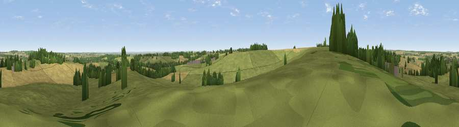

Viewpoint near Edingley
#23921 in England · top 27% of its area beats it · near EdingleyWhere it is
The exact computed spot (SK 65325 54125). Click the marker for map links.
The view, rendered

A 360° render of this exact spot computed from the terrain model, tree cover and land cover — summer colours, afternoon light, calibrated against photographs of famous viewpoints. Real trees, hedges and buildings will differ in detail.
The panorama
Grey silhouette: terrain skyline in each direction (720 bearings, Earth curvature and refraction included). Dashed green: skyline with trees (+15 m) and buildings (+8 m) as obstacles. Blue strip: how far the ground is visible on each bearing.
Where the view opens
Wedge length = distance to the farthest visible ground on that bearing (vegetation-aware). Rings at 10, 25 and 50 km.
What fills the view
59% grassland · 30% cropland · 9% woodland · 1% built-up
Angular shares of the visible panorama (visual magnitude), not map area. Landscape diversity 0.41 (0–1 Shannon).
Key numbers
More beautiful places nearby
The staircase of upgrades: each row has a higher view potential than everything closer. Driving times are estimates from straight-line distance, calibrated against real road routing — check an actual route before setting out.
| Place | Direction | Drive | Score |
|---|---|---|---|
| Viewpoint near Farnsfield | WSW · 1 km | ~2 min | 59.2 |
| Viewpoint near Arnold | SW · 9 km | ~18 min | 64.1 |
| Burstheart Hill [Thoresby Colliery] | N · 14 km | ~26 min | 69.3 |
| Viewpoint near Belvoir | SE · 26 km | ~42 min | 70.8 |
| Crich Stand | W · 31 km | ~48 min | 73.0 |
| Alport Height | W · 35 km | ~53 min | 73.9 |
| Viewpoint near Woodhouse Eaves | SSW · 42 km | ~62 min | 77.7 |
| Viewpoint near Mow Cop | W · 79 km | ~103 min | 78.9 |
53.08036, -1.02626 · source: screening · position refined by local search. Computed location — check access rights before visiting.